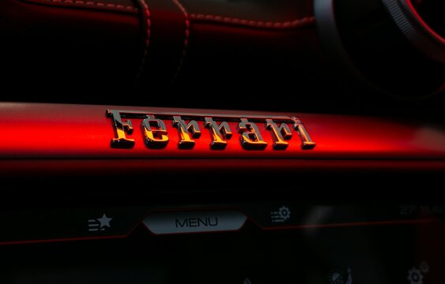

|  | Home | Quem Somos | Contatos | |
Quem somosSomos apaixonados por inovação e excelência automotiva, e nossa jornada nos leva até o ícone supremo da engenharia esportiva: a Ferrari Enzo. Em nossa busca incessante pela perfeição, celebramos o legado da Ferrari, uma marca que representa a vanguarda da performance e do design no mundo dos automóveis A Ferrari Enzo, nomeada em homenagem ao fundador Enzo Ferrari, é um verdadeiro testamento da maestria da Ferrari. Produzida entre 2002 e 2004, a Enzo não é apenas um carro; é uma obra-prima da engenharia automotiva. Com um motor V12 de 6,0 litros que entrega impressionantes 660 cavalos de potência, a Enzo se destaca por sua aceleração explosiva e velocidade máxima que ultrapassa os 350 km/h. Seu design aerodinâmico, esculpido em fibra de carbono, não só garante um desempenho excepcional, mas também um visual inconfundível que a tornou um ícone no universo dos supercarros Cada aspecto da Ferrari Enzo foi meticulosamente desenvolvido para proporcionar uma experiência de condução incomparável. O interior, minimalista e orientado para o piloto, combina tecnologia avançada e conforto, refletindo o compromisso da Ferrari com a excelência. O sistema de transmissão F1 e os controles inspirados na Fórmula 1 garantem uma interação perfeita entre o motorista e a máquina, enquanto o design inovador oferece um equilíbrio perfeito entre forma e função. A Ferrari Enzo não é apenas um carro esportivo; é uma declaração de engenharia de ponta, um símbolo de exclusividade e um marco na evolução da Ferrari. Ao nos aprofundarmos no legado da Enzo, celebramos a visão audaciosa de Enzo Ferrari e o espírito que continua a impulsionar a Ferrari como a líder indiscutível no mundo dos supercarros. Em cada curva e aceleração, a Ferrari Enzo nos lembra da paixão pela perfeição que define a Ferrari. Por que comprar uma Ferrari?
| |
Todos os Direitos reservados |
|